생산자동화산업기사 (2011-03-20 기출문제)
1과목: 기계가공법 및 안전관리
1. 강판으로 된 재료에 암나사 가공을 하는데 사용되는 것은?
- 스패너
- 스크레이퍼
- 다이스
- 탭
(정답률: 85%)

2. 브로치 가공에 대한 설명 중 옳지 않은 것은?
- 가공 홈의 모양이 복잡할수록 느린 속도로 가공한다.
- 절삭 깊이가 너무 작으면 인선의 마모가 증가한다.
- 브로치는 떨림을 방지하기 위하여 피치의 간격을 같게 한다.
- 절삭량이 많고 길이가 길 때에는 절삭날 수를 많게 한다.
(정답률: 82%)
3. 전해연마의 특징에 대한 설명으로 틀린 것은?
- 가공변질층이 없다.
- 내마모성, 내부식성이 좋아진다.
- 알루미늄, 구리 등도 용이하게 연마할 수 있다.
- 가공면에는 방향성이 있다.
(정답률: 72%)
4. 연삭숫돌에 사용되는 숫돌 입자 중 천연산인 것은?
- 코런덤
- 알록사이트
- 카아버런덤
- 탄화붕소
(정답률: 58%)
5. 연삭숫돌을 교환한 후 시운전 시간은 어느 정도로 하는가?
- 30초
- 1분
- 2분
- 3분 이상
(정답률: 92%)
6. 기계부품 또는 공구의 검사용, 게이지 정밀도 검사 등에 사용하는 게이지 블록은?
- 공작용
- 검사용
- 표준용
- 참조용
(정답률: 69%)
7. 기어(gear)의 이(tooth)수를 등분하고자 할 때 사용하는 밀링 부속품은?
- 분할대
- 바이스
- 정면커터
- 측면커터
(정답률: 92%)
8. 윤활유의 사용목적과 거리가 먼 것은?
- 윤활작용
- 냉각작용
- 비산작용
- 밀폐작용
(정답률: 73%)
9. 밀링에서 지름 150mm커터를 사용하여 160rpm으로 절삭한다면 이 때 절삭속도는 약 몇 m/min인가?
- 75
- 85
- 102
- 194
(정답률: 92%)
10. 양두(兩頭)그라인더의 숫돌차로 일감을 연삭할 때 받침대와 숫돌의 간격은 몇 mm 이내로 조정하는가?
- 3mm
- 5mm
- 7mm
- 9mm
(정답률: 69%)
11. 비교측정의 장점이 아닌 것은?
- 측정범위가 넓고 표준 게이지가 필요 없다.
- 제품의 치수가 고르지 못한 것을 계산하지 않고 알 수 있다.
- 길이, 면의 각종 형상 측정, 공작기계의 정밀도 검사 등 사용범위가 넓다.
- 높은 정밀도의 측정이 비교적 용이하다.
(정답률: 77%)
12. 다음 그림은 밀링에서 더브테일 가공도면이다. X의 치수로 맞는 것은?
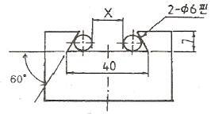
- 25.608
- 23.608
- 22.712
- 18.712
(정답률: 60%)
13. 래핑작업의 장점이 아닌 것은?
- 정밀도가 높은 제품을 가공한다.
- 가공면이 매끈하다.
- 가공면의 내마모성이 좋다.
- 랩제의 잔류가 쉽다.
(정답률: 94%)
14. 선반 바이트의 설치 요령이다. 적합하지 않은 것은?
- 바이트 자루는 수평으로 고정한다.
- 바이트의 돌출 거리는 작업에 지장이 없는 한 길게 고정한다.
- 받침(shim)은 바이트 자루의 전체면이 닿도록 한다.
- 높이를 정확히 맞추기 위해서는 받침(shim) 1개 또는 두께가 다른 여러 개를 준비한다.
(정답률: 75%)
15. 수평식 보링 머신 중 새들이 없고, 길이방향의 이송은 베드를 따라 컬럼이 이송되며, 중량이 큰 가공물을 가공하기에 가장 적합한 구조를 가지고 있는 형은?
- 테이블형
- 플레이너형
- 플로우형
- 코어형
(정답률: 80%)
16. 연삭 작업 시 주의할 점에 대한 설명으로 틀린 것은?
- 숫돌 커버를 반드시 설치하여 사용한다.
- 양 숫돌차의 입도는 항상 같게 하여야 한다.
- 연삭 작업시에는 보안경을 꼭 착용하여야 한다.
- 숫돌을 나무 해머로 가볍게 두들겨 음향검사를 한다.
(정답률: 79%)
17. 절삭공구 재료에서 W, Cr, V, Co등의 원소를 함유하는 합금강은?
- 고탄소강
- 합금 공구강
- 고속도강
- 초경합금
(정답률: 32%)
18. 밀링 머신에서 하향 절삭에 비교한 상향절삭의 장점은 어느 것인가?
- 절삭시 백래시 영향이 적다.
- 일감의 고정이 유리하다.
- 표면거칠기가 좋다.
- 공구날의 마모가 느리다.
(정답률: 87%)
19. 선반의 베드(bed)에 관한 설명으로 틀린 것은?
- 미끄럼 면의 단면 모양은 원형과 구형이 있다.
- 주로 합금주철이나 구상흑연주철 등의 고급주철로 제작한다.
- 미끄럼면은 기계가공 또는 스크레이핑(scraping)을 한다.
- 내마모성을 높이기 위하여 표면경화처리를 하고 연삭가공을 한다.
(정답률: 40%)
20. 다음 중 드릴 가공의 종류가 아닌 것은?
- 리밍
- 카운터 보링
- 버핑
- 스폿 페이싱
(정답률: 27%)
2과목: 기계제도 및 기초공학
21. 도면에서 다음에 열거한 선이 같은 장소에 중복되었다. 어느 선으로 표시하여야 하는가? (치수 보조선, 절단선, 숨은선, 중심선)
- 숨은선
- 중심선
- 치수 보조선
- 절단선
(정답률: 77%)
22. 일반구조용 압연강재의 KS 재료 표시기호 “SS330”에서 “330”은 무엇을 뜻하는가?
- 최저 인장 강도
- 탄소 함유량
- 경도
- 종별 번호
(정답률: 82%)
23. 구멍의 치수가
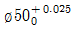
이고, 축의 치수가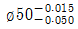
이라면 무슨 끼워 맞춤인가?- 헐거운 끼워 맞춤
- 중간 끼워 맞춤
- 억지 끼워 맞춤
- 가열 끼워 맞춤
(정답률: 77%)
24. 다음과 같은 리벳의 호칭법으로 올바르게 나타낸 것은? (단, 재질 SV330 이다.)
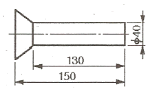
- 납작머리리벳 40×150 SV330
- 접시머리리벳 40×150 SV330
- 납작머리리벳 40×130 SV330
- 접시머리리벳 40×130 SV330
(정답률: 74%)
25. 다음 중 스크레이핑(Scraping) 가공을 나타내는 가공기호는?
- FS
- PS
- FF
- SH
(정답률: 86%)
26. 다음 투상도 중 KS 제도 통칙에 따라 올바르게 작도된 투상도는?
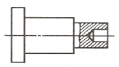
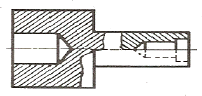
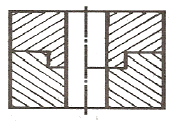
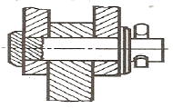
(정답률: 69%)
27. 그림과 같은 표면의 결 도시방법의 기호 설명이 올바르게 된 것은?
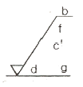
- c’: 기준 길이
- b: 줄무늬 방향 기호
- f: Ra의 값
- d: 가공 방법
(정답률: 58%)
28. 제3각 투상법으로 정면도와 평면도를 그림과 같이 나타낼 경우 가장 적합한 우측면도?
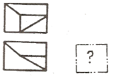
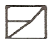
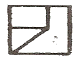
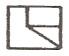
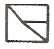
(정답률: 63%)
29. 제3각법으로 그린 다음과 같은 3면도 중 각 도면간의 관계가 올바르게 그려진 것은?
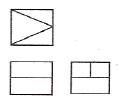
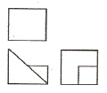
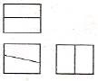
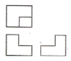
(정답률: 75%)
30. KS 나사의 표시에 관한 설명 중 올바른 것은?
- 나사산의 감김 방향은 오른나사인 경우만 RH로 명기하고, 왼 나사인 경우 따로 명기하지 않는다.
- 미터 가는 나사는 피치를 생략하거나 산의 수로 표시한다.
- 2줄 이상인 경우 그 줄 수를 표시하며 줄 대신에 L로 표시할 수 있다.
- 피치를 산의 수로 표시하는 나사(유니파이 나사 제외)의 경우 나사의 호칭은 다음과 같이 나타낸다.
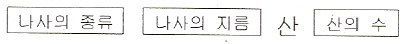
(정답률: 86%)
31. 다음 응력의 크기에 대한 관계가 올바른 것은?
- 탄성한도 ＞ 허용응력 ≥ 사용응력
- 허용응력 ＞ 탄성한도 ≥ 사용응력
- 탄성한도 ＞ 사용응력 ≥ 허용응력
- 사용응력 ＞ 탄성한도 ≥ 허용응력
(정답률: 63%)
32. 크기와 방향을 아울러 가지고 있는 물리량을 벡터(vect-or)량이라 하며 크기만 가지고 있는 물리량을 스칼라(scalar)량 이라고 한다. 다음 중 벡터(vector)량은 어느 것인가?
- 힘
- 밀도
- 체적
- 에너지
(정답률: 83%)
33. 10Ω과 15Ω의 저항을 병렬로 연결하고 50A의 전류를 흐르게 할 때 15Ω에 흐르는 전류는?
- 10A
- 20A
- 30A
- 40A
(정답률: 79%)
34. 그림과 같이 물체에 작용한 힘의 크기가 F, 힘의 방향으로 물체가 이동한 거리가 S이면 한 일 W는?
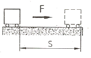
- W=F+S
- W=F-S
- W=F×S
- W=F÷S
(정답률: 86%)
35. 다음 중 SI단위계의 접두어가 맞게 짝지어진 것은?
- 10-9: n(나노)
- 103: h(헥토)
- 10-2: m(밀리)
- 10-6: c(센티)
(정답률: 94%)
36. 다음 중 토크가 발생되는 경우가 아닌 것은?
- 실린더로 물체를 수직 상승시키는 경우
- 소켓 렌치로 볼트를 조이는 경우
- 모터로 부하를 회전시키는 경우
- 기어 전동 장치가 운전되는 경우
(정답률: 67%)
37. 직경 52cm인 관속에 흐르는 물의 평균속도가 5m/s일 때 유량은 약 몇 m3/s인가?
- 0.16
- 1.06
- 10.6
- 15.6
(정답률: 59%)
38. 순수한 상태에서는 전기가 통하지 않지만, 열이나 빛 등의 인위적인 조작을 가하면 전기가 통하는 물질을 무엇이라고 하는가? (단, 대표적인 원소로 규소(Si), 게르마늄(Ge)등이 있다.)
- 도체
- 절연체
- 반도체
- 자성체
(정답률: 56%)
39. 정사각형 대각선의 길이가 8mm일 때 한 변의 길이는?
- 2mm
- 2√2mm
- 4mm
- 4√2mm
(정답률: 50%)
40. 각각의 저항값이 R1, R2인 저항들을 직렬로 접속 하였을 때, 합성저항 R0를 구하는 식은?
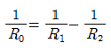
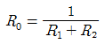
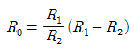
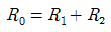
(정답률: 93%)
3과목: 자동제어
41. 유압제어와 비교한 공압제어에 대한 설명으로 틀린 것은?
- 공기 압력은 6~7kgf/cm3정도를 사용한다.
- 유압에 비하여 큰 출력을 발생한다.
- 수분 탈착기와 빙결 방지기를 설치한다.
- 작동속도는 빠르나 압축성으로 속도가 일정치 않다.
(정답률: 94%)
42. 자동제어계를 해석하고 설계하기 위해 주로 사용되는 기준입력에 속하지 않는 것은?
- 게단함수
- 삼각함수
- 램프(등속)함수
- 포물선(등가속)함수
(정답률: 70%)
43. 회로압이 설정압을 넘으면 막(膜)이 유체압에 의하여 파열되어 유압유를 탱크로 귀환시킴과 동시에 압력 상승을 막아 기기를 보호하는 역할을 하는 것은?
- 감압밸브
- 압력스위치
- 체크밸브
- 유체퓨즈
(정답률: 75%)
44. 일반적으로 서보기구로 제어할 수 있는 것은?
- 유량
- 전압
- 주파수
- 방위
(정답률: 77%)
45. 온도, 유량, 압력 등을 제어량으로 하는 제어계로서 프로세스에 가해지는 외란의 억제를 주 목적으로 하는 것은?
- 프로세스 제어
- 자동제어
- 서보 기구
- 정치 제어
(정답률: 86%)
46. 선형제어계의 안정도를 판별하는 방법이 아닌 것은?
- 루쓰-허위츠 판별법
- 나이키스트선도
- 보드선도
- 전개도법
(정답률: 74%)
47. 다음 그림의 블록선도에 대한 설명으로 옳은 것은?
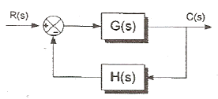
- 직렬결합
- 병렬결합
- 피드백결합
- 캐스케이드 결합
(정답률: 79%)
48. 입력과 출력을 비교하는 장치가 필요한 제어로 맞는 것은?
- 프로그램 제어
- 되먹임 제어
- ON-OFF 제어
- 프로세스 제어
(정답률: 94%)
49. f(t)=t2 의 라플라스 변환은?
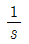
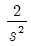
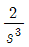
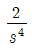
(정답률: 73%)
50. 오프셋(offset)을 발생하는 제어방식은?
- I제어(적분제어)
- P제어(비례제어)
- PI제어(비례적분제어)
- PID제어(비례적분미분제어)
(정답률: 37%)
51. 제어계에서 검출부의 제어 기기들 중 접촉식 스위치는?
- 마이크로 스위치
- 투과형 광전 스위치
- 고주파 발진형 근접 스위치
- 미러 반사형 광전 스위치
(정답률: 75%)
52. 과도응답에서 상승시간은 응답이 최종값의 몇 %까지의 시간으로 정의되는가?
- 1~20
- 10~90
- 30~70
- 40~60
(정답률: 93%)
53. PLC의 주변기기를 사용하여 프로그램을 메모리에 기억시키는 것을 무엇이라고 하는가?
- 코딩(coding)
- 디버그(debug)
- 로딩(loading)
- 메모리 할당
(정답률: 83%)
54. 제어계에서 전달함수의 값이 1인 경우의 의미는?
- 일정량의 입력이 출력에서 0이다.
- 입력량이 0일 때, 출력은 1이다.
- 입력량이 무한대 일 때, 출력은 1이다.
- 입력과 출력의 값이 같다.
(정답률: 53%)
55. 게이지 압력을 옳게 표시 한 것은?
- 게이지 압력 = 절대압력 ÷ 대기압
- 게이지 압력 = 절대압력 × 대기압
- 게이지 압력 = 절대압력 – 대기압
- 게이지 압력 = 절대압력
(정답률: 84%)
56. PLC 구성 시 출력기기에 해당되지 않는 것은?
- 표시동
- 버저
- 히터
- 광센서
(정답률: 77%)
57. 생산공정이나 기계장치 등에 자동제어계를 사용할 때의 특징으로 잘못된 것은?
- 생산속도 증가
- 제품 품질의 균일화
- 인건비 감소
- 생산 설비의 수명 감소
(정답률: 88%)
58. 전달함수 G(s)=1+sT인 제어계에서 ωT=1000일 때, 이득은 약 몇 [dB]인가?
- 80
- 60
- 40
- 20
(정답률: 79%)
59. 다음 중 서보 모터의 관성을 줄이고 기계적 시상수를 줄이기 위한 조치가 아닌 것은?
- 모터 코일의 권선수를 증가시킨다.
- 코어리스(coreless) 구조로 모터를 만든다.
- 모터 회전자의 중량을 줄인다.
- 모터 회전자의 지름을 작게하고 축 방향으로 길게 한 구조로 한다.
(정답률: 69%)
60. 다음 중 유압동력을 기계적인 회전운동으로 변환하는 것은?
- 유압모터
- 전동기
- 유압펌프
- 유압실린더
(정답률: 100%)
4과목: 메카트로닉스
61. 다음 그림과 같이 자기 언덕턴스가 접속되어 있을 때 합성 자기 인덕턴스는? (단, 이 때 상호유도 작용은 없다고 가정한다.)
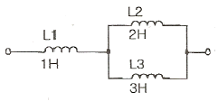
- 6[H]
- 2.2[H]
- 1.8[H]
- 0.7[H]
(정답률: 39%)
62. 스텝 각이 1.8°인 스테핑 모터에 반지름이 2.6cm인 바퀴를 장착하였다. 200개의 펄스를 모터에 인가하였을 때 바퀴가 움직인 거리는 약 얼마인가?
- 16.3cm
- 21.3cm
- 52.0cm
- 93.6cm
(정답률: 18%)
63. AD(analog-digital)변환 과정 중에 입력 신호가 바뀌면 올바른 변환이 될 수 없으므로 샘플링(sampling)된 데이터를 다음 샘플링까지 그대로 유지하는 회로는?
- 저주파 통과 필터(low-pass filter)
- 고주파 통과 필터(high-pass filter)
- 홀더(holder)
- 샘플러(sampler)
(정답률: 56%)
64. 전류가 전압에 비레하는 것은 어느 법칙과 관련이 있는가?
- 렌츠의 법칙
- 옴의 법칙
- 줄의 법칙
- 키르히호프의 법칙
(정답률: 84%)
65. 다음 그림은 무엇을 나타낸 것인가?
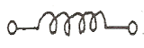
- 저항
- 전압
- 인덕턴스
- 커패시턴스
(정답률: 82%)
66. 래크 커터, 피니언 커터, 호브 등을 사용하여 기어를 절삭하는 방법은?
- 형판법
- 창성법
- 모형법
- 총형 커터법
(정답률: 85%)
67. 스테핑 모터는 다음 중 무엇에 의해 회전각이 제어 되는가?
- 전압크기
- 전류크기
- 펄스수
- 계자
(정답률: 79%)
68. 다음의 진리표를 만족하는 논리는? (단, A,B:입력, Y:출력)
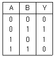
- AND
- OR
- NOT
- XOR
(정답률: 86%)
69. 64×3비트의 기억 장치를 만들려고 한다. 최소한 몇 개의 어드레스 선이 필요한가?
- 3
- 4
- 5
- 6
(정답률: 80%)
70. 동기형 디지털 회로에서 한 클록주기 또는 수 클록주기 만큼 지연시킬 필요가 있을 때 사용되는 플립플롭은?
- RS
- JK
- D
- T
(정답률: 92%)
71. 다음 중 접합공정에 해당되지 않는 것은?
- 용접
- 호빙
- 경납땜
- 리벳팅
(정답률: 95%)
72. 정격전압에서 1[kW]의 전력을 소비하는 전열기에서 정격 전압의 60[%] 전압을 가할 때의 소비전력[W]은?
- 1000
- 600
- 540
- 360
(정답률: 10%)
73. 선삭(Turning)작업에서 작업자의 잘못된 작업방법은?
- 바이트 교환 시에는 기계를 정지시키려고 한다.
- 바이트는 가능한 짧게 단단히 고정한다.
- 표면 거칠기 상태 검사는 안전하게 저속에서 손끝으로 만져 감촉을 느낀다.
- 척 핸들은 사용 후 척에서 제거한다.
(정답률: 95%)
74. CNC공작기게에 관한 설명이다. 옳지 않은 것은?
- 구동모터의 회전에 따라 기계 본체의 테이블이나 주축 헤드가 동작하는 기구를 서보기구라고 한다.
- CNC공작기계의 서보기구에서는 동작의 안정성과 응답성이 대단히 중요하다.
- 서보기구의 제어방식에서 개방회로는 간단하고 되먹임 제어가 가능하므로, 정확한 위치제어가 가능하다.
- CNC공작기계에서는 정밀도 높은 위치제어를 위해서 반폐쇄회로 방식과 폐쇄회로 방식을 많이 사용한다.
(정답률: 69%)
75. 서로 다른 2종류의 금속 양끝을 접합하고 양접점간의 온도차에 의해 발생되는 열기전력을 이용하여 온도를 측정하는 것은?
- 압전센서
- 열전쌍
- 서미스터
- 측온저항체
(정답률: 85%)
76. 마이크로프로세서에서 누산기의 용도로 적합한 것은?
- 명령의 저장
- 명령의 해독
- 연산결과의 일시저장
- 다음 명령의 주소 저장
(정답률: 59%)
77. 다음 중 고정자측에 영구자석을 배치하여 공극부에 직류바이어스 자게를 발생시켜 제어하는 스테핑 모터는?
- 가변 릴럭턴스형
- 반영구 자석형
- 영구 작석형
- 하이브리드형
(정답률: 71%)
78. 마이크로컴퓨터 입력 인터페이스에 관한 설명 중 틀린 것은?
- 마이크로컴퓨터에 접속하는 입력신호는 아날로그 신호와 디지털 신호로 크게 분류된다.
- 아날로그 신호는 각종 센서나 트랜스듀서 혹은 측정기기로부터의 신호이다.
- 마이크로컴퓨터에 아날로그 신호를 입력하기 위해서 D-A변환기를 설치하여야 한다.
- RS-232C와 같이 규격이 정해져 있는 것은 전용 레벨 변환 IC를 사용한다.
(정답률: 69%)
79. 다음 센서 중에서 직접 디지털신호를 출력으로 하는 것은?
- 엔코더
- 포텐쇼미터
- 스트레인게이지
- 차동트랜스
(정답률: 62%)
80. 다음 중 온도센서가 아닌 것은?
- 서미스터
- 열전대
- 바이메탈
- 리밋스위치
(정답률: 87%)